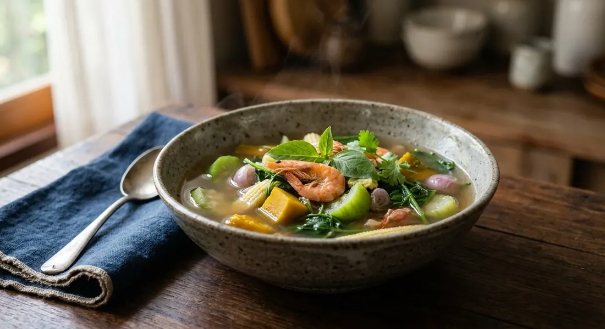

The vegetable soup whose heat is peppercorn, not chilli — pumpkin, loofah, baby corn and the aniseed leaf bai maenglak in a broth pounded from dried shrimp and shrimp paste.

แกงเลียง is the soup Thai kitchens cook for a new mother — the name carries เลี้ยง (liang, "to feed" or "nourish"), and every source agrees on the job it does: it warms, it restores, and with the loofah and bai maenglak it was traditionally believed to bring the milk in. Kapook lists the parts and their purposes — loofah for the blood and the new mother's milk, bai maenglak and peppercorn to settle the stomach and drive out wind, pumpkin for the eyes.
Its heat is the telling detail. Thai curries burn with chilli; kaeng liang burns with พริกไทย — whole peppercorns pounded into the paste — and Mahidol University's nutrition institute notes it is precisely this pepper heat that makes the soup "unfamiliar to the tongue" of anyone expecting a chilli burn. Under the pepper sits กะปิ (shrimp paste) and pounded dried shrimp, which SiamKapi credits with the depth that keeps the broth from tasting like plain vegetable water.
The vegetables are the dish, and they are chosen from the local plot: pumpkin, angled gourd, calabash, baby corn, straw mushrooms, tamlueng leaves, and the one ingredient no recipe will let you skip — ใบแมงลัก, bai maenglak, the leaf whose aniseed smell is the whole aroma of the pot. Mahidol's Institute of Nutrition studied the soup properly: low energy, high fibre, and in its cell and animal studies the soup measurably calmed inflammation and nearly halved the damage from a known carcinogen. It is, in short, the Thai kitchen's idea of food as medicine — served, as Mahidol's cooks insist, with a bowl of น้ำพริกกะปิ on the side.
| Thai | English | Amount |
|---|---|---|
| พริกไทยเม็ด | Whole peppercorns | 1–2 tsp |
| หอมแดง | Shallots | 4–5 |
| กุ้งแห้ง | Dried shrimp | 2 tbsp |
| กะปิ | Shrimp paste | 1 tsp |
| เกลือ | Salt | a pinch |
| กุ้งสด | Prawns | 200 g |
| ฟักทอง | Pumpkin, cut small | 200 g |
| บวบ | Angled gourd or loofah, sliced | 1 |
| ข้าวโพดอ่อน | Baby corn | 5 |
| เห็ดฟาง | Straw mushrooms | 100 g |
| ใบตำลึง | Tamlueng leaves or young spinach | 1 cup |
| ใบแมงลัก | Bai maenglak leaves | 1 cup |
| น้ำ / น้ำซุป | Water or light stock | 1.2 litres |
| น้ำปลา | Fish sauce | 2–3 tbsp |
The Wongnai pot (ImAiw): a different paste entirely — dried chillies, double the shallots, ten fingers of krachai and fresh prawns pounded in raw — with sugar a full 4–5 teaspoons and a spoon of seasoning powder. The Mahidol pot: blanch each vegetable separately first (pumpkin 4 minutes, gourd 3, calabash 6, mushrooms 2), then dissolve the paste in the leftover blanching water, and no sugar at all. The Kapook pots: chicken stock instead of water, one version sweetened with a single teaspoon of palm sugar, and a third built on wild sweet-leaf vegetables and grilled fish that needs no sugar because the leaves bring their own.
The paste. Mahidol, Pantip, SiamKapi and nlovecooking keep it lean: peppercorns, shallots, dried shrimp, shrimp paste, salt. Kapook adds krachai, and Wongnai goes furthest — dried chillies, krachai, and fresh prawns pounded into the paste instead of dried shrimp. nlovecooking notes the old-fashioned paste sometimes pounded in dried fish too.
The sugar. Most pots take none: Pantip and Mahidol season with fish sauce alone, and Kapook's wild-vegetable version explicitly skips sugar because the leaves are already sweet. Kapook's chicken-stock pot allows a single teaspoon of palm sugar; Wongnai's pot goes the other way entirely with four to five teaspoons.
Blanching first. Mahidol alone blanches every vegetable separately in plain water — timed per vegetable, four, three, six and two minutes — to keep the colours bright, then reuses that water for the soup. Every other source cooks the vegetables in the seasoned broth in sequence and accepts the colour they take on.
The liquid. Water for most. Kapook swaps in chicken stock. SiamKapi suggests boiling prawn heads and shells and straining the water as a middle path — richer than water, without drowning the vegetables.
The maenglak moment. Everyone agrees the leaf goes last; they disagree on how last. Pantip and SiamKapi take the pot off the heat and let the leaves wilt on the residual warmth, so the aroma floats above the soup. Kapook, Mahidol, Wongnai and nlovecooking stir them in over the flame, seconds before lifting the pot. Nobody adds them at the start — all agree that cooks the smell away.
This recipe is translated from the following Thai-language sources. Where they disagree, we've said so.
1. Kapook Cooking — "3 สูตรทำแกงเลียง ผักแน่นรสเผ็ดร้อนพร้อมสูตรพริกแกง" (three pots: mixed vegetables with prawns, the mushroom version, and wild sweet-leaf with grilled fish) — cooking.kapook.com
2. SiamKapi — "แกงเลียงกุ้งสดให้น้ำแกงหอมพริกไทย: สูตรทำจริงและเคล็ดลับคุมผัก" (the technique guide used here: pounded paste order, vegetable sequence, prawn-shell stock) — siamkapi.com
3. Mahidol University Institute of Nutrition — "แกงเลียง" (the central-region recipe with separate blanching; the anti-inflammatory research) — inmu.mahidol.ac.th
4. Wongnai — "แกงเลียงกุ้งสด" by ImAiw Wattanakorn (the chilli-and-krachai paste, fresh prawns pounded in, generous sugar) — wongnai.com
5. Pantip — "แกงเลียงกุ้งสด สูตรน้ำแกงหอมสมุนไพร รสกลมกล่อม ทำง่าย" topic 44109249 (the off-heat maenglak technique; the common mistakes) — pantip.com
6. nlovecooking — "แกงเลียงกุ้งสด น้ำแกงรสอร่อย พร้อม 3 เคล็ดลับความอร่อย" (the postpartum tradition; dried fish in the old paste) — nlovecooking.com